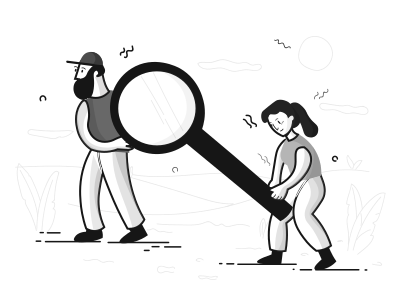
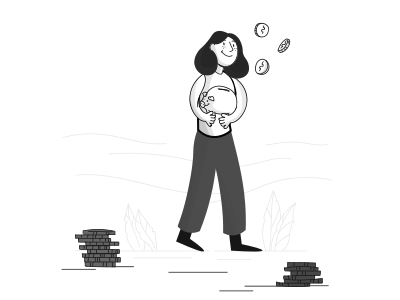
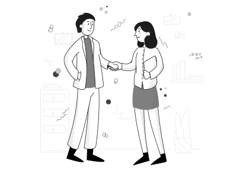
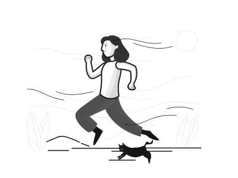

Дизайн
бюро
Дизайн-бюро
Мы проектируем интерфейсы
и помогаем командам
без проектировщиков
Кому подходит Бюро
Проектам, где меньше 4 разработчиков
Проектам, которым нужна временная помощь
Стартапам для проверки гипотез
Например
Cтартап проверяет гипотезу и ему пока не нужен дизайнер на полную ставку. Стартап обращается в Бюро, и кто-то из проектировщиков уделяет их задаче 30% рабочего времени. Менеджеру стартапа не нужно нанимать и адаптировать проектировщика, обеспечивать его задачами, заниматься развитием и оценкой. Он получает готовую задачу в таком же виде, как её сделал бы проектировщик в продукте.
За чей счет банкет
У Бюро нет своего бюджета на зарплаты, поэтому у вас должен быть выделен ФОТ на задачу. В конце каждого месяца мы распределяем затраты на ФОТ проектировщиков между проектами, задачами которых занимались.
Какие задачи берем
Всё, что относится к проектированию интерфейсов. Что-то, с чем потом будут работать пользователи. Например, спроектировать фичу в продукте или сделать кликабельный прототип для проверки гипотезы.
Мы не делаем
- сайты и лэндинги — всё равно лучше Веб-студии не сделаем
- иллюстрации, баннеры, фирстили, логотипы — нам такое сложно, а коммуникационным дизайнерам нет
- исследования пользователей, юзабилити-тестирования – никто не сравнится с Эмилией и UX-lab
- разработку и вёрстку. С этим помогут рейнджеры
Как передать задачу
Напишите на почту Ксюше Ильиных ответы на вопросы:
- Код проекта, на который можно будет поставить затраты на ФОТ.
- Что нужно сделать? Какие проблемы в продукте нужно решить?
- Зачем делается эта задача? Что случится, если её не делать?
- Объём задачи. Постарайтесь приблизительно сверху оценить трудозатраты проектировщика (в днях / неделях / месяцах).
- Что готово к проектированию? Насколько завершена аналитика по задаче? Были ли какие-то исследования — юзабилити-тестирования, опросы, обратная связь от пользователей?
- Есть ли у задачи внешний срок? Чем он продиктован? Что будет, если вы не успеете?
Мы внутри Бюро обсудим задачу, после чего я напишу вам, кто и когда сможет ею заняться. Дальше вы будете общаться с дизайнером напрямую.
Когда мы возьмём задачу
Обычно все дизайнеры Бюро заняты текущими задачами, поэтому мы не сможем взять задачу завтра. Приходите заранее: за несколько недель или месяц, тогда мы всё спланируем. Если у вас срочная небольшая задача, напишите, возможно, получится что-то придумать.
работа над задачей
На первой встрече вы знакомитесь с проектировщиком и обсуждаете задачу. После этого у проектировщика появляются вопросы, они обсуждаются письменно в почте или чате, либо на встрече. Проектировщик сориентирует, когда будет следующий чек-поинт: на нём обсуждается концептуальное решение. На следующем чек-поинте уже обсуждаются детали.
Таких чек-поинтов может быть много, зависит от задачи, но сами итерации не больше недели. Вы всегда будете знать, что сейчас происходит с задачей и когда она будет готова к разработке.
Когда проектировщик заканчивает проектировать, он организует презентацию. Обычно это встреча, где он рассказывает про задачу и решение, показывает что в итоге получилось. На эту встречу можно звать разработчиков.
Это еще не всё
После того, как задача передана в разработку, работа проектировщика не заканчивается. Во время разработки могут появиться вопросы по дизайну, либо выясниться какие-то нюансы, которых не было на старте. Это нормально, и поэтому проектировщики Бюро поддерживают задачи во время разработки: отвечают на вопросы и дорабатывают детали, если это необходимо.
Также мы хотим контролировать результат. Ответственность проектировщика — работающий продукт, а не красивые макеты. Параллельно с этапом тестирования подключите проектировщика, чтобы он посмотрел на реализацию и проверил, что всё хорошо.